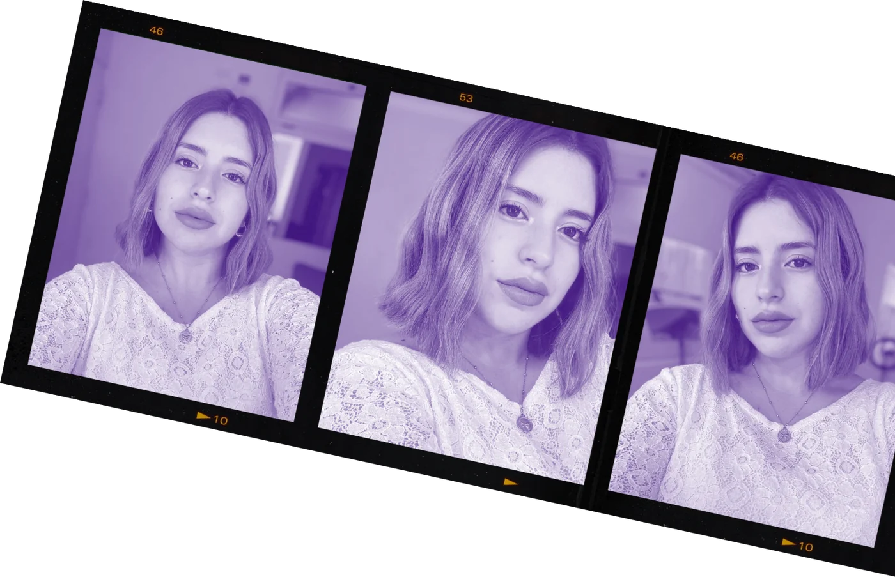
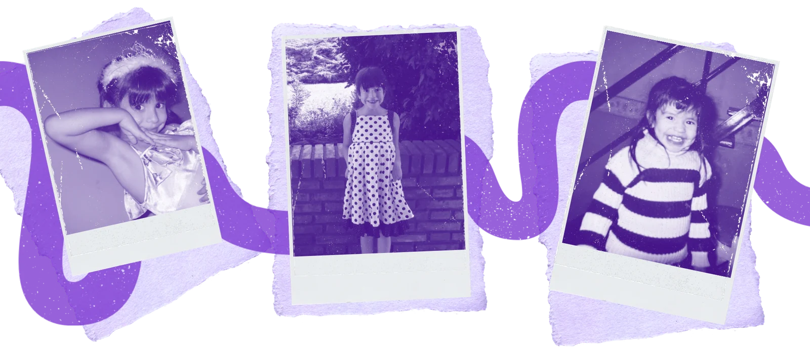
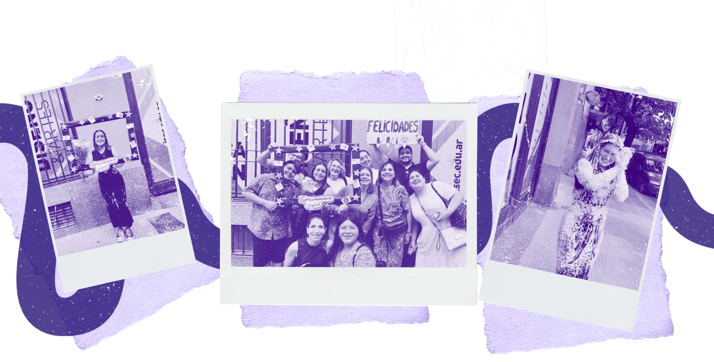

About me
¡Hola! Soy Brisa.
Me recibí de comunicadora y mercadóloga digital en ISEC, y soy community manager: me dedico a las redes sociales, la creación de contenido y la estrategia de contenido de cada marca. Me gusta pensar cada marca de forma única, crear contenido con sentido y acompañar cada proceso de cerca.
Mi objetivo es ayudar a marcas a crecer, conectar con su público y construir una presencia digital que realmente represente lo que son.
Donde empezó todo

Desde chica siempre me gustó mucho dibujar. Era algo que realmente disfrutaba y hasta el día de hoy sigue siendo uno de mis hobbies. Con el tiempo, ese lado creativo fue creciendo conmigo y encontré la forma de llevarlo a lo que hago hoy.
Esta soy yo ahora…

Fui formándome a través de mi carrera en comunicación y marketing digital, y también sumando distintos cursos que me permitieron seguir aprendiendo y creciendo. Hoy en día sigo capacitándome constantemente, porque sé que en el mundo digital todo cambia, y me gusta estar actualizada para poder dar lo mejor en cada proyecto.
Poder recibirme y dedicarme a lo que me gusta es un logro muy importante para mí. Pero también sé que no fue solo esfuerzo propio, sino que hubo un acompañamiento muy grande detrás. El apoyo de mi familia y amigos fue fundamental en todo este camino. Sin ellos, nada de esto hubiera sido posible.